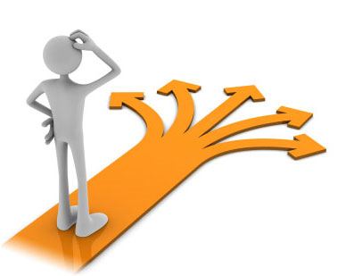

Qu'est-ce que le coaching ?
Le coaching est un accompagnement personnalisé sur une période de temps relativement courte. Un processus de coaching dure environ 10 séances de 1h. Vous pouvez l’arrêter à tout moment.
x Vous y verrez plus clair et trouverez les ressources pour atteindre les objectifs que vous vous serez vous-même fixés, accompagné par votre coach certifié.
Les entretiens peuvent se faire en face-à-face dans un espace géographique entre Niort, Poitiers et Tours.
Je travaille en collaboration avec un espace de coworking, Le Vaisseau, ce qui permet une grande souplesse dans les horaires et les lieux, tout en respectant la confidentialité nécessaire à nos échanges.
Pour le reste de la France, les entretiens peuvent se dérouler par Skype ou What’s App, ou tout simplement par téléphone.
Combien ça coûte ?
Le tarif est de 50 euros pour une séance de 1h. Le processus de coaching se déroule habituellement en 10 séances, parfois moins, parfois un peu plus.
L’entretien préliminaire est complètement gratuit, que vous décidiez d’entamer le processus de coaching ou non.
Il se déroule en quatre temps :
- un temps d’écoute de votre demande
- un temps d’explication du processus, de tout ce qu’implique, et n’implique pas, d’entamer ce processus.
- un temps de questions/réponses, pour que tout soit bien clair,
- un temps consacré à l’organisation pratique (lieu, modalités de contact, tarif).
-

- 